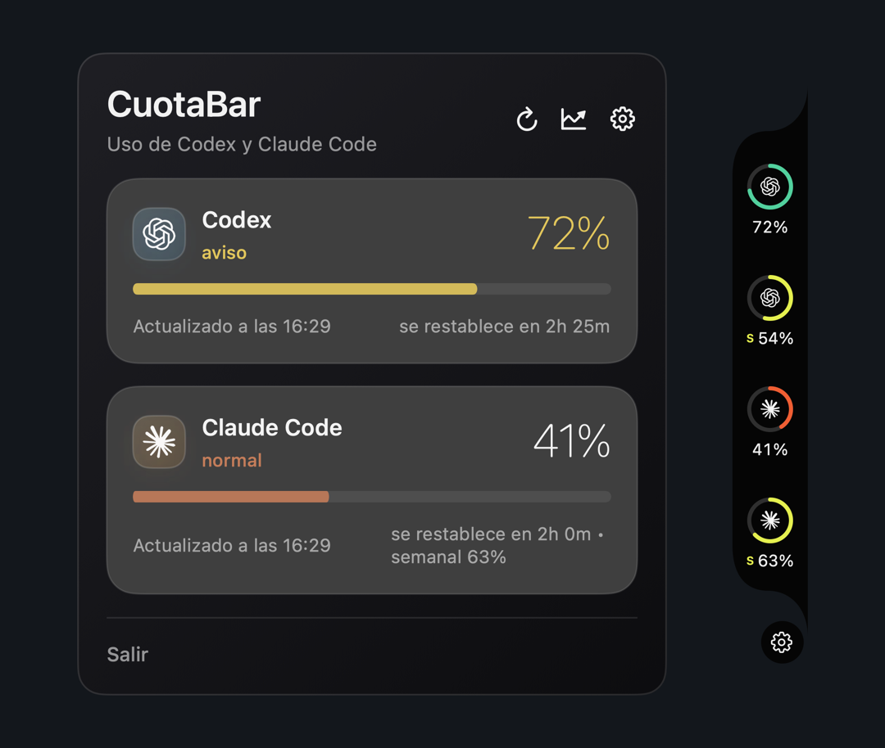

Know your quota. Keep coding.
Track Codex and Claude Code usage and see when your quotas reset, right from your macOS menu bar.
Build from source
Features
-
Real-time monitoring
Refresh Codex and Claude Code usage manually or at an interval you choose.
-
Floating widget
Adjust the widget’s size, position, and opacity, and keep it above other windows.
-
Usage notifications
Get notified when you reach your chosen usage threshold or when a quota resets.
-
Usage history
See 7 or 30 days of usage and export your full recorded history as CSV or JSON.
-
Session auto-detection
Connect with a local sign-in session without entering API keys.
-
Three languages
Choose English, Japanese, or Spanish, or follow the macOS language setting.
How it connects
In CuotaBar, open Settings → Accounts and select Connect next to a service.
-
Codex (OpenAI)
Uses your Codex app or CLI session from
~/.codex/auth.json. -
Claude Code (Anthropic)
Uses a signed-in session from the Claude desktop app or a supported browser. If needed, CuotaBar opens your browser to sign in at claude.ai.
Build CuotaBar
Requires macOS 14+ and Swift 6.2+.
-
Run the build script from the project folder.
./scripts/build_app.sh - Find
CuotaBar.appindist/v<version>/, move it to Applications, and open it.